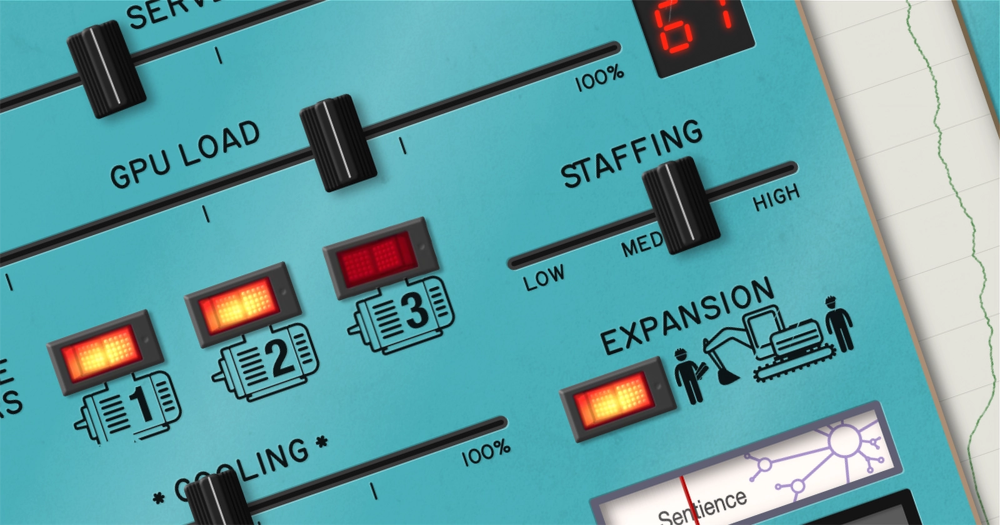

DataCenter.FM, the sound of AI

AI is sprouting up everywhere nowadays, and not only online; it also requires vast data centres filled with millions of GPUs.
I wanted to explore the issues around this physical presence in an original way, ending up bringing together two things: soothing audio generator apps used for relaxation/focus, and the interactive panels you find in some museums for exploring information or how systems work (my school once had a trip to a nuclear power exhibition; predictably, every child immediately tried to send the reactor simulator into meltdown).
DataCenter.FM hands you the controls of a server farm, operating a simple simulation that turns your inputs into audiovisual outputs. Moving sliders and flicking switches can take the system from gentle whirring to a screaming cacophony accompanied by indicators and warning lights.
At its core, the sound generator plays 8 loops for servers, cooling, gas turbines and construction work, constantly adjusting volumes, panning and pitch/speed to reflect the current state. 27 non-looped sounds add human activity and alarms.
Audio files created by Dean Salant are manipulated via howler.js. The graphics are custom illustrations combined with public domain icons and textures, and the main font is Routed Gothic.
Take it for a spin and see what sounds you can make, but watch out if you leave it chugging for a while — when the AI reaches sentience, it might have its own ideas about how to run things…